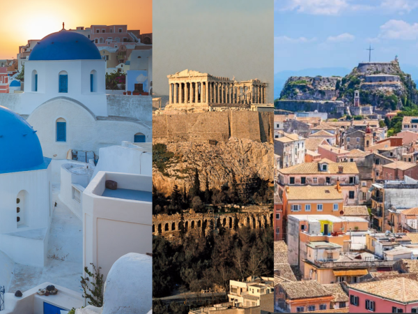

My Dream Car | Where I was born | My Favorite Show |
My Favorite Movie Series |
My Current Location |
My Favorite Video Game | Current Fashion Trends | Citation Page |
Greece is a beautiful country to visit, with many attractions to visit, beautiful landscapes, and delicious food. Greece has over 2000 islands and only 170 of those islands are inhabited. The capital of Greece is Athens, bordered by the Aegan Sea all the way to the southern area of the Mediterranean Sea. The weather is always perfect in Greece since its located towards the south so during the spring, summer, and the fall it is lovely. Be sure to visit the beaches there too. Every island has its own beach which very few tourists visit. Make sure to relax by the beach after all the museums and temples you visit.
Here you can find all of the locations in Greece you can visit.Museums to visit in Greece:
Some more places to visit in Greece:
| Museums | Beaches | Attractions |
|---|---|---|
| Archaeological Museum of Olympia | Mykonos | Temple of Olympian Zeus |
| Delphi Archaeological Museum | Zakynthos | Ancient Agora of Athens |
| Museum of Cycladic Art | Corfu | Panathenaic Stadium |
Click on a section of the image to learn more about that Island!
